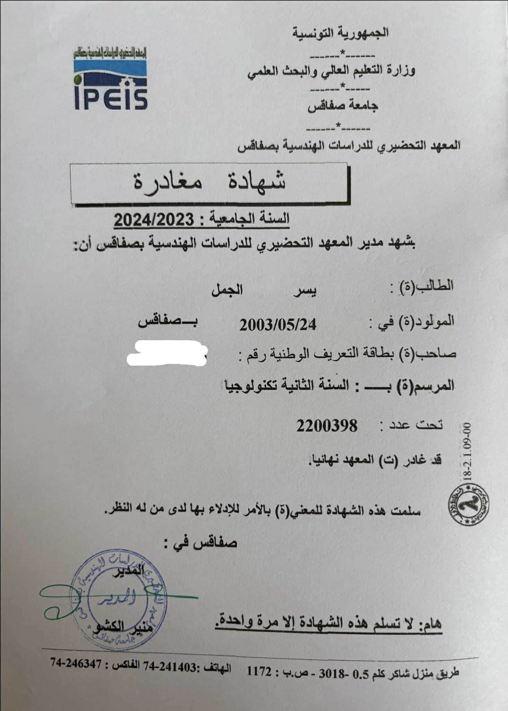

Mon Parcours Académique:
Voici un aperçu de mon parcours académique, avec les diplômes obtenus jusqu'à présent.
Baccalauréat en Sciences
Année : 2022
Spécialité : Sciences Techniques

Ce diplôme marque la fin de mes études secondaires et le début de mon parcours universitaire en Génie Informatique.
Préparatoire
Année : 2023
Université : IPEIS
